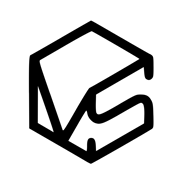

Antes de construirlo, véalo terminado.
Ingeniero civil y visualizador arquitectónico. Modelado, iluminación y recorridos 3D.
Kevin Gil · Bucaramanga, Colombia

KEVIN GIL
Ingeniero civil y visualizador arquitectónico. Modelado, iluminación y recorridos 3D.
Señale cualquiera para ver de qué se trata. Haga clic para entrar.
Me llamo Kevin Stick Gil Arévalo. Estudio ingeniería civil en la Universidad Pontificia Bolivariana, seccional Bucaramanga, con nueve semestres culminados y un promedio ponderado de 4.2 sobre 5.
En 2026 fundé VISUAL 3D STUDIO, un estudio centrado en la representación precisa del diseño: modelos digitales coherentes con criterios constructivos y planos técnicos que facilitan la coordinación en obra.
Esa mezcla es el punto. No llego al render desde la imagen, llego desde el modelo: cuando levanto un proyecto en Revit, los espesores, las luces y los apoyos son los que se van a construir. Y como subo a obra varias veces por semana, veo cada semana la distancia entre lo que se dibuja y lo que se levanta.